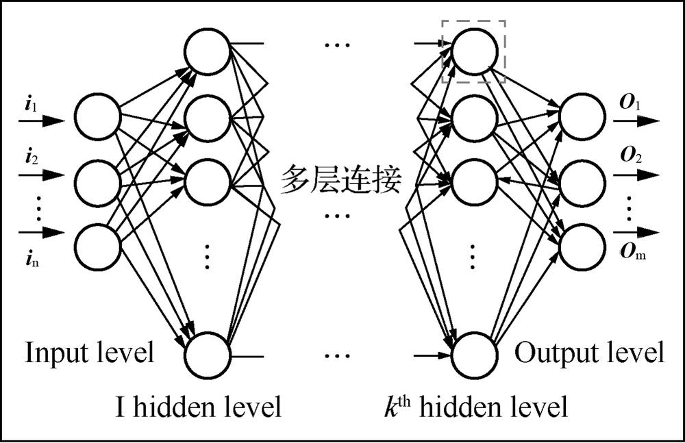
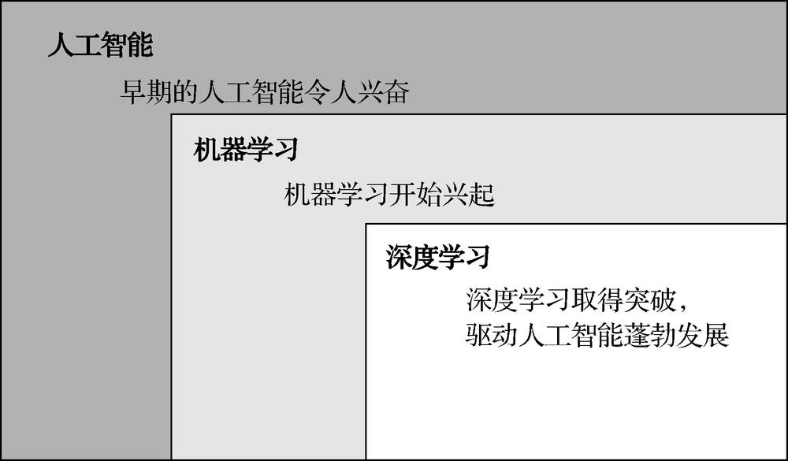
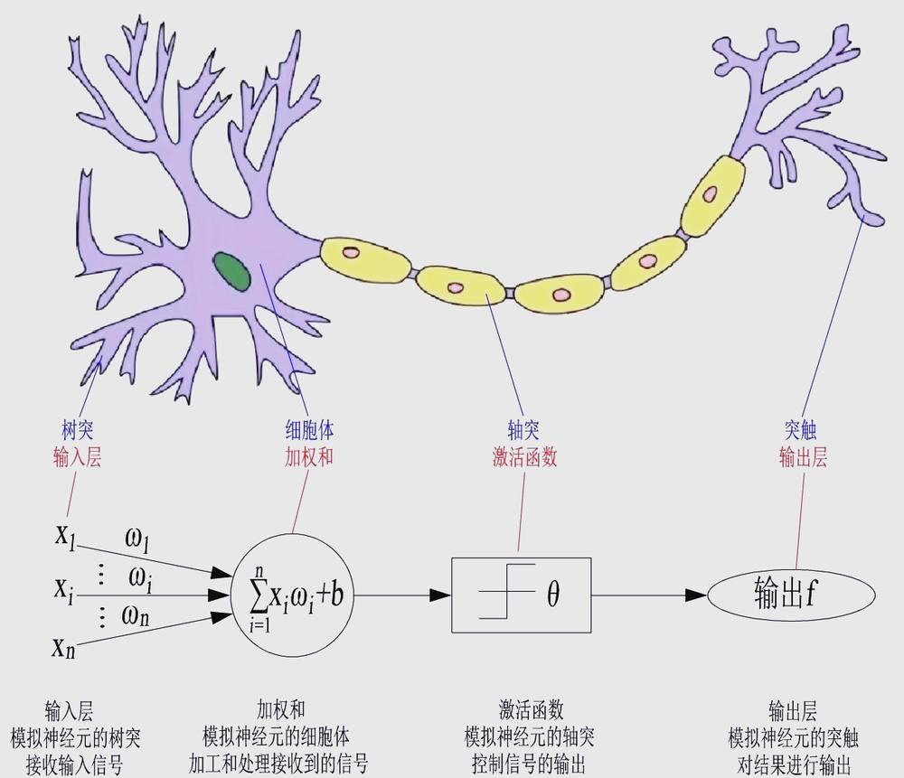
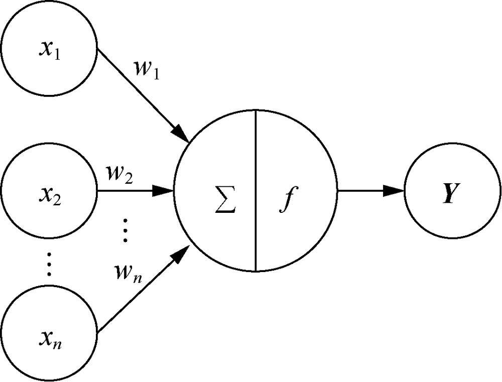
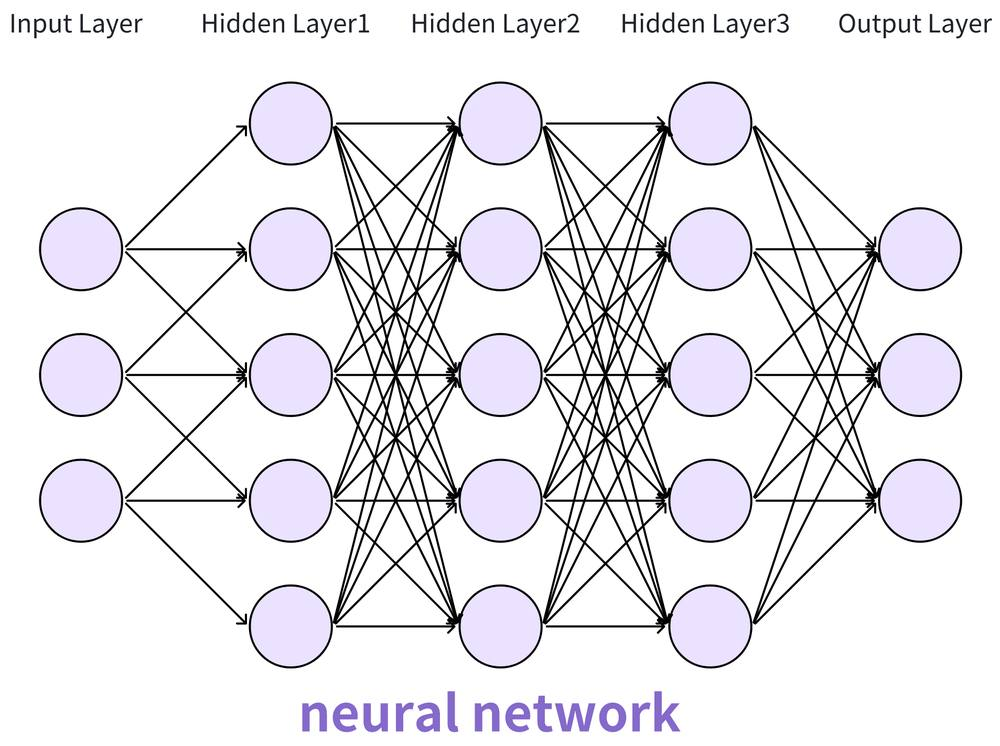

第 1 页 · 3 深度学习概述
3 深度学习概述

模块2：认识机器学习


第 2 页 · 幻灯片
第 3 页 · 是什么让

是什么让
机器如此智能
第 4 页 · 一、深度学习的崛起
一、深度学习的崛起
深度学习：是机器学习的一个子集，它的核心是利用“深度”的神经网络，让计算机自动从原始数据中，一层一层地学习出更抽象、更高级的特征。

输入层
输出层
第 5 页 · 一、深度学习的崛起
一、深度学习的崛起

人工智能、机器学习和深度学习三者之间的关系
第 6 页 · 二、神经网络的魅力
二、神经网络的魅力

生物神经结构与人工神经网络对比
第 7 页 · 二、神经网络的魅力
二、神经网络的魅力

人工神经元的结构
神经元
权重
激活
函数

理论已经证明，通过增加神经网络的层数和改变激活函数，并利用相应的学习算法不断迭代改变损失误差，就可以用多层神经网络来拟合任意函数，解决线性和非线性问题。
第 8 页 · 探讨为什么深度神经网络是目前AI主流技术
探讨为什么深度神经网络是目前AI主流技术

列举主要观点，填写下表。
| 主要原因 | 应用场景 | 所属学习方式 |
| 自动学习特征 | ||
| 出色的泛化能力 | ||
| 持续的算法创新 | ||
| …… |
第 9 页 · 学生分享及教师点评
学生分享及教师点评

| 分享要点 | 分值 | 计分 | 教师点评 |
| 1、你完成任务使用的主要工具？ | 10 | 合理使用AI工具 | |
| 2、与其他同学进行了怎样的充分讨论？ | 10 | 集思广益、团结协助 | |
| 3、简述DNN为何成为主流技术？ | 30 | 主动思考，善于总结 | |
| 4、DNN有哪些典型应用场景？ | 20 | 善于观察，理实一体 | |
| 5、DNN学习方式是固定的吗？ | 20 | 敢于质疑，灵活应用 | |
| 6、其它（含逻辑、表情、主动、清晰、流畅、自信等） | 0-10 | 能说、亲和、善用、精技 |
第 10 页 · 子任务3：语音提示处理
子任务3：语音提示处理

学以致用
应用为王